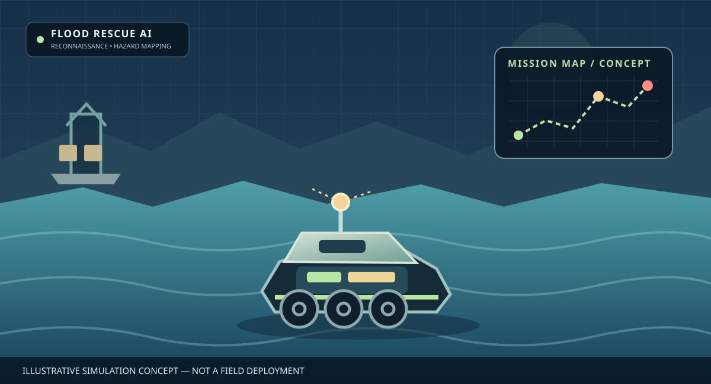
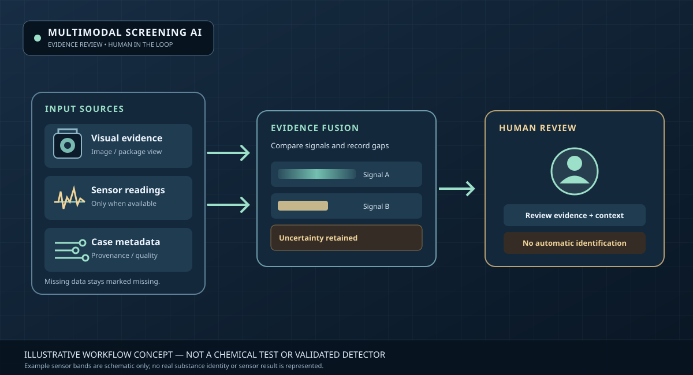

AI และหุ่นยนต์ · พัฒนาโดยยึดหลักฐาน
เทคโนโลยีที่มีประโยชน์
พัฒนาอย่างรับผิดชอบ
PUI89 AI Robotics เป็นโครงการพัฒนา AI และแนวคิดหุ่นยนต์อิสระ มุ่งเน้นปัญหาจริงในภาคเกษตร การรับมืออุทกภัย และการตรวจคัดกรองหลายรูปแบบ โดยให้ความสำคัญกับการทดสอบซ้ำได้ ความปลอดภัย และการเข้าถึงเทคโนโลยี
ความโปร่งใส: ภาพแนวคิดและการจำลองไม่ใช่หลักฐานว่าหุ่นยนต์ทำงานจริงแล้ว ผลการทดสอบและความสามารถที่ยังไม่ผ่านการตรวจสอบจะระบุไว้อย่างชัดเจน

PUI89 · COCONUT HARVEST AIAI ประยุกต์ใช้กับงานเกษตรภาพประกอบแนวคิดการออกแบบ
สามโครงการ หนึ่งมาตรฐานด้านหลักฐาน
พัฒนาทีละขั้น โดยแยกแนวคิด ซอฟต์แวร์ที่ทำงานได้ การจำลอง และผลทดสอบในโลกจริงออกจากกัน
ภาพประกอบแนวคิด · ดูไฟล์ภาพต้นฉบับ ↗
01 / เกษตรกรรม
Coconut Harvest AI
ระบบ AI สำหรับวิเคราะห์ระยะการเจริญของมะพร้าว 4 กลุ่ม ได้แก่ มะพร้าวเขียวอ่อน มะพร้าวเขียวกำลังพัฒนา มะพร้าวเขียวแก่ และมะพร้าวแก่สีน้ำตาล
ช่วงความสูงต้นปาล์ม 0–30 เมตรเป็นเป้าหมายการออกแบบระยะยาว ยังไม่ได้ยืนยันความสามารถในการตรวจจับ เอื้อมถึง หรือเก็บเกี่ยวจริง
ดูโครงการและซอร์สโค้ด ↗

02 / ภัยพิบัติ
Extreme Flood Rescue AI
การวางแผนและจำลองสถานการณ์น้ำท่วมช่วง 0–15 เมตร เพื่อศึกษาการสำรวจพื้นที่ การทำแผนที่อันตราย และการสนับสนุนการตัดสินใจโดยมนุษย์
ระดับน้ำดังกล่าวเป็นพารามิเตอร์การจำลอง ไม่ใช่พิกัดความสามารถของหุ่นยนต์จริง และยังไม่มีการยืนยันผลกู้ภัยภาคสนาม
ดูโครงการและซอร์สโค้ด ↗

03 / การตรวจคัดกรอง
Multimodal Narcotics Screening AI
แนวคิดเวิร์กโฟลว์สำหรับตรวจทานข้อมูลหลายรูปแบบ จัดการผลลัพธ์ที่ไม่แน่นอน และส่งต่อให้ผู้มีอำนาจตรวจสอบ
การดูภาพเพียงอย่างเดียวไม่สามารถยืนยันชนิดสารเคมีได้ ความสามารถของระบบตรวจจับยังไม่ได้ผ่านการรับรอง
ดูโครงการและซอร์สโค้ด ↗
อัปเดตการตรวจสอบ PUI89 AI Core
ผลตรวจสอบล่าสุดที่ยืนยันแล้ว: ผ่านการทดสอบซอฟต์แวร์ 52 รายการ ครอบคลุม shared core ตัวคำนวณเมตริกของ Coconut AI และการตรวจสอบเบื้องต้นของชุดข้อมูล ผลนี้เป็นผลทดสอบซอฟต์แวร์ ไม่ใช่หลักฐานความแม่นยำของ AI หรือความพร้อมของหุ่นยนต์จริง
สิ่งที่ตรวจสอบ
สัญญาการทำงานของซอฟต์แวร์ ความถูกต้องของรายงานจำลอง โครงสร้างหลักฐาน และเงื่อนไขความปลอดภัย
ข้อจำกัดของผลทดสอบ
การผ่านการทดสอบซอฟต์แวร์ไม่ได้ยืนยันความสามารถจริงในการเก็บเกี่ยว ช่วยเหลือผู้ประสบภัย ตรวจจับสาร หรือควบคุมหุ่นยนต์จริง
เปิดแดชบอร์ดคุณภาพ ↗ ดูผลทดสอบที่ยืนยันแล้ว ↗ หลักการวิศวกรรม ↗ แผนพัฒนาหลัก ↗
พื้นฐานวิศวกรรมร่วมของ PUI89
แนวทางของ PUI89 คือพัฒนาพื้นฐานซอฟต์แวร์ AI ร่วมกัน แล้วต่อยอดเป็นสามแอปพลิเคชันเฉพาะทาง งาน shared core กำลังทยอยพัฒนาและตรวจทาน ส่วนนี้อธิบายทิศทางสถาปัตยกรรม ไม่ใช่การยืนยันว่าทุกส่วนเชื่อมต่อหรือผ่านการตรวจสอบแล้ว
ติดตามสถานะและความไม่แน่นอน
ระบุแหล่งที่มา เวลา ความเชื่อมั่น สถานะการสอบเทียบ ข้อมูลเก่า และข้อมูลที่ขัดแย้งกัน เพื่อให้ระบบส่งต่อให้มนุษย์ตรวจสอบเมื่อหลักฐานไม่เพียงพอ
ทดสอบและรายงานข้อผิดพลาด
ใช้การทดสอบ Python ที่ทำซ้ำได้และรายงานแบบมีโครงสร้าง ผลทดสอบซอฟต์แวร์ไม่ใช่หลักฐานยืนยันสมรรถนะภาคสนามหรือความปลอดภัยของหุ่นยนต์จริง
แยกข้อเสนอจากการสั่งงานจริง
แยกการวางแผนงานออกจากการควบคุมฮาร์ดแวร์ เริ่มจากการจำลองและการตรวจสอบโดยมนุษย์ก่อนพิจารณาทดลองกับฮาร์ดแวร์
ดูสถานะและผลตรวจสอบข้ามโครงการ ↗